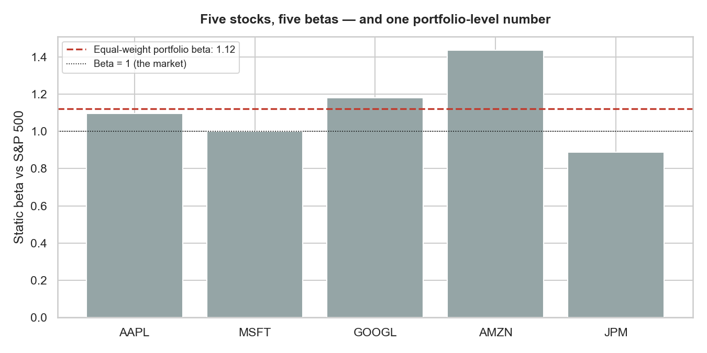
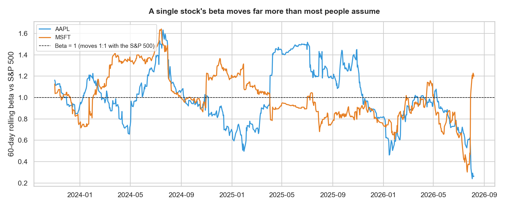

01Same word, different math
"Beta" gets used constantly in finance, and it rarely means quite the same thing twice. An analyst calls a stock "high-beta." A portfolio manager reports "we're running at 0.8 beta to the index." A risk desk says "beta-weight the book before you report net exposure." All three are doing genuinely different jobs — but the arithmetic underneath every one of them is the same regression: how much does this thing move for every 1% the benchmark moves?
beta = Cov(instrument, benchmark) / Var(benchmark) — that's it. What changes is
what counts as the "instrument," what counts as the "benchmark," and what you do with the
number once you have it. This piece walks through the main places that formula shows up,
with real data behind each one, plus a live tool at the bottom to compute it yourself.
02The starting point: a stock's beta to the market
This is the version everyone meets first — CAPM beta, a stock regressed against a broad market index. It's meant to isolate systematic risk (the part of a stock's movement explained by the market) from idiosyncratic risk (the part that's specific to the company). A beta of 1.0 means the stock has historically moved roughly in line with the market; above 1.0, it amplifies market moves; below 1.0, it dampens them.
Using three years of daily data against the S&P 500, five familiar large-caps come out at noticeably different betas — and the spread is wider than the "big tech moves together" intuition suggests:

03Scaling up: portfolio beta and sizing a hedge
A single stock's beta is rarely the number that matters day to day — a portfolio's is. The
simplest version is a position-weighted average of every holding's beta, which collapses an
entire book into one figure: "this portfolio moves at 1.12x the market." That number is what
a portfolio manager actually uses to size an index hedge — if you're running 1.12 beta and
want to bring that to zero, you sell index futures (or a similar instrument) equal to
portfolio value × 1.12, not the portfolio's raw notional.
The five-stock, equal-weighted basket above comes out to a portfolio beta of 1.12 — meaningfully more market-sensitive than any single "average" stock might suggest, because two high-beta names (AMZN, GOOGL) pull the average up more than JPM's lower beta pulls it down.
Illustrative hedge sizing: a INR 1 crore portfolio at 1.12 beta needs roughly INR 1.12 crore of offsetting index exposure to be market-neutral — not INR 1 crore. Sizing the hedge off notional instead of beta-weighted notional is a common, quiet source of under-hedging.
04Why beta has to be recomputed, not memorized
Every use of beta above assumed a fixed number. In practice, beta drifts — sometimes by a lot — because the relationship between an instrument and its benchmark isn't structurally constant. Computing it once and reusing it for months is one of the more common ways a "beta of 1.1" quietly becomes wrong.

This is true of every flavor of beta in this piece — CAPM, portfolio, or otherwise. A number computed in a calm quarter and carried forward into a volatile one is describing a relationship that's already moved on.
05Beyond stocks: the same math, a different benchmark
Beta isn't limited to equities regressed against a stock index — the identical technique applies anywhere you need to express one instrument's exposure in terms of another. One place I've come across this is in commodities: a book holding crude oil alongside refined products (heating oil, gasoline) doesn't move as one thing, so each instrument gets beta-weighted against a reference contract — Brent for the oil/products complex, Henry Hub for the North American gas complex — to collapse several correlated-but-different exposures into one comparable number.
Using public futures data as a stand-in for that same technique: WTI's beta vs. Brent had a static full-period value of 0.98, but ranged 0.80–1.21 on a rolling basis; refined products ranged even wider (heating oil 0.71–1.23, RBOB 0.52–1.03). The lesson from the equity section above holds here too — the static number is a reasonable average and a poor description of any single day.

06A few other places beta shows up
None of these get a full worked example here — just enough to show how far the same idea travels once you know what to look for:
- Levered vs. unlevered (asset) beta — corporate finance strips a company's capital structure out of its equity beta to get an "asset beta" comparable across companies with different debt loads, then re-levers it for a specific valuation.
- Factor betas / "smart beta" — instead of one market benchmark, a Fama-French-style model regresses a stock against several factors at once (size, value, momentum), each with its own beta, to explain returns a single-factor CAPM beta misses.
- Sector and style beta — comparing a stock's beta within its own sector index rather than the broad market, to separate "moves with tech" from "moves with the market generally."
- Cross-currency and rates beta — a similar regression shows up in how a local bond yield or currency moves relative to a reference rate, though the mechanics differ enough that it's usually not called "beta" out loud.
07Try it: compute rolling beta yourself
Same tool, both datasets — pick any pair below and watch the beta series recompute live in your browser from the underlying daily returns.
Shorter windows react faster but get noisier; longer windows smooth the noise but lag a real shift. Switch between AAPL and WTI and notice the range is wide in both worlds — this isn't an equities-only or commodities-only phenomenon.
08Takeaway
The useful mental model isn't "beta = a stock's sensitivity to the market" — that's just the first place most people meet it. It's closer to: beta is a general-purpose tool for asking "how much does X move for every 1% Y moves," and finance reaches for that question constantly — sizing a hedge, comparing companies across capital structures, collapsing a multi-instrument book into one number, or just deciding whether a stock's recent calm is really calm or just a beta that's temporarily drifted low. The regression is simple. Knowing which version you're computing, and how stale it might already be, is the actual skill.